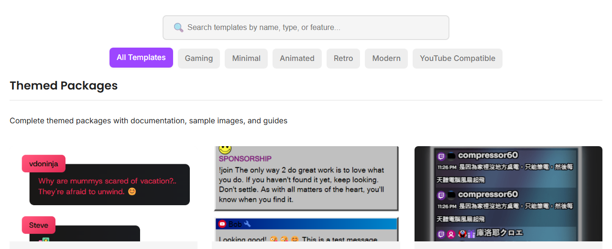

Pick a layout, add your session ID, and paste it into OBS.
Use the Templates Gallery when you want a ready-made chat look instead of building CSS from scratch.

Every overlay URL needs your session ID. Replace the placeholder with the same session used by your chat source and dock.
https://socialstream.ninja/sampleoverlay.html?session=YOUR_SESSION_ID
Open the template URL in a browser first. If it looks right there, it should be easier to debug in OBS.

If the overlay is blank, test the dock before changing template settings.
https://socialstream.ninja/dock.html?session=YOUR_SESSION_ID

More details: OBS Quick Start.